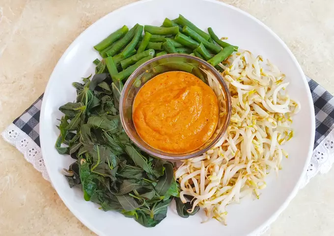

Pecel sayur

Bahan-bahan
- 1 kg Ikan kakap
- 2 genggam Daun kemangi
- 1 butir Telur ayam
- 6 siung Bawang merah
- 2 ruas Kunyith
- 3 butir Kemiri
langkah-langkah
- Cuci bersih ikan, kerat-kerat agar bumbu menyerap
- Haluskan bawang, cabai merah besar, kunyit, kemiri
- Marinasi ikan dengan bumbu halus, gula, garam dan penyedap. Simpan dikulkas bawah selama kurang lebih 20 menit
- Kocok telur, lalu balurkan keseluruh ikan sampai rata
- Panaskan kukusan, setelah air mendidih masukan bungkusan ikan
- Kukus selama kurang lebih 30-45 menit
kembali ke beranda